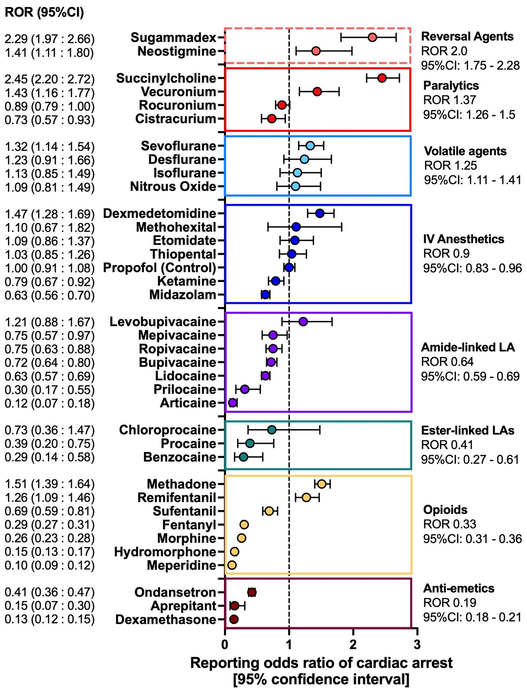
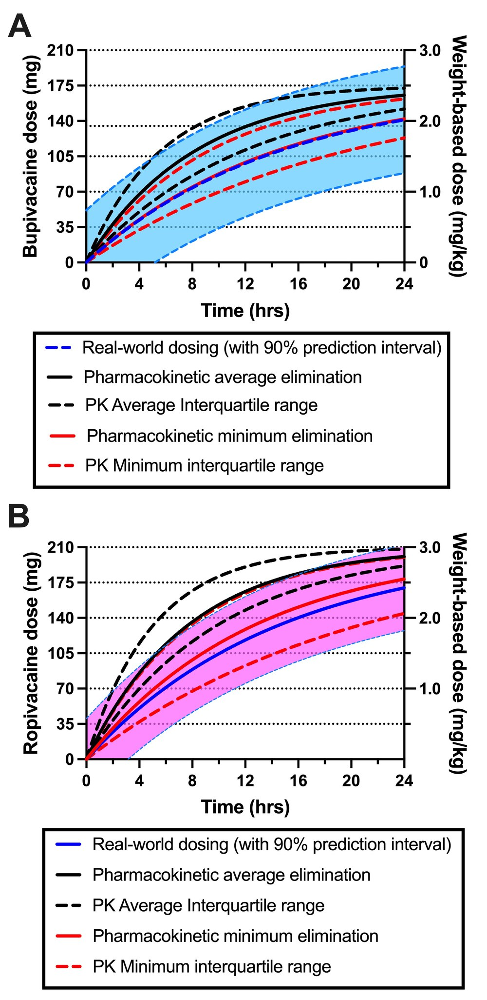
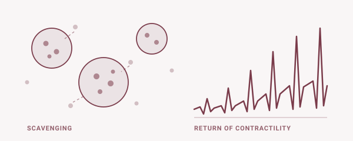

Anesthesiology · University of Illinois at Chicago
Michael R. Fettiplace, MD, PhD
How local anesthetics injure patients — and how dosing, guidelines and antidotes can stop it.

My work sits where pharmacology meets safety surveillance. I mine national and global adverse-event databases for signals that clinical trials are too small to see, define defensible dosing limits for the blocks and catheters used every day, and build the mechanistic and meta-analytic case for lipid emulsion as an antidote. That evidence feeds into national practice advisories on local anesthetic systemic toxicity.
Clinically I practice regional, transplant and neuroanesthesiology at a quaternary care academic center. I chair the ASRA Pain Medicine LAST workgroup and co-authored the Third ASRA Practice Advisory on Local Anesthetic Systemic Toxicity.
Research
- 01Local anesthetic pharmacovigilanceSignal detection in FAERS, VigiBase and the National Poison Data System
- 02Toxicity & dosing recommendationsDefensible dosing limits for blocks and catheters, and the ASRA practice advisories
- 03Artificial intelligence in publishingDelphi consensus on disclosure and responsible use of language models
- 04Retrospective cohort studiesBlock timing, opioid consumption, echocardiography and anesthetic choice
- 05Lipid resuscitation scienceScavenging, cardiotonicity, and the quality of the evidence behind both
01 · Pharmacovigilance
Local anesthetic pharmacovigilance
Randomized trials are not powered to detect the rare catastrophes that define local anesthetic safety. Spontaneous reporting systems are — if you interrogate them carefully. I use disproportionality methods across the FDA Adverse Event Reporting System, the WHO VigiBase database and the National Poison Data System to ask which agents and which settings account for contemporary morbidity and mortality, whether the pattern of harm has shifted as practice moved toward high-volume fascial plane blocks, and how much of an apparent signal is an artefact of who chooses to file a report.
A recurring finding is that the dangerous exposures are not the ones regional anesthesiologists worry about most. Non-anesthesia settings, topical and infiltrative use, and lidocaine in particular account for a disproportionate share of deaths.
{kind=link}

02 · Toxicity & dosing
Toxicity and dosing recommendations
The familiar milligram-per-kilogram ceilings for bupivacaine and ropivacaine derive from single-injection techniques studied decades ago. Modern practice looks nothing like that: large-volume fascial plane blocks, bilateral truncal catheters running for days, and combinations layered on top of surgical infiltration. Applied to those techniques the old ceilings are simultaneously too permissive in some situations and needlessly restrictive in others.
This work reconstructs dosing guidance from what is known about absorption, accumulation and clearance — cataloguing published adult and pediatric truncal catheter practice, comparing the methods available for predicting safe redosing, and examining weight-based scaling in the blocks where it most often goes wrong. The output is meant to be usable at the bedside: a limit a clinician can defend, not an asterisked range. The same evidence base feeds the ASRA practice advisories on prevention, recognition and treatment of systemic toxicity.
{kind=link}

03 · Artificial intelligence
Artificial intelligence in scientific publishing
Large language models entered medical writing faster than the norms governing them. Authors, reviewers and editors are all now using them, often without a shared understanding of what must be declared. Blanket prohibitions are unenforceable; blanket permissiveness erodes accountability for what appears in the literature.
I have used modified Delphi methodology — first within the Regional Anesthesia & Pain Medicine community, then across the editors-in-chief of anaesthesia and pain medicine journals internationally — to converge on what should be disclosed, by whom, and in what form. The recommendations separate uses that require declaration from those that do not, and place responsibility for verification squarely with the human author.
![Infographic on AI use in scientific writing and publishing: what constitutes AI (large language models, Gen-AI, machine learning, computer vision, natural language processing, chatbots, robotic tools, augmented search, predictive analytics), and what must be disclosed — where (online submission system and methods), what (software model and version, publisher and location, date used), and details (writing and translation, hypothesis generation, background research, data analysis and interpretation, methods development, audio/video generation, table/figure generation, reference identification, ethical concerns of use).](assets/img/projects/ai.jpg)
04 · Cohort studies
Retrospective cohorts in anesthetic management
A great deal of perioperative practice varies by habit rather than evidence, because the questions are too granular or too low-risk to justify a trial. Retrospective cohorts drawn from the anesthetic record can answer many of them, provided the exposure is defined sharply and the confounding is taken seriously.
This work spans block timing and early recovery, the characteristics that predict opioid consumption after arthroplasty, obstetric epidural dosing against guideline expectations, and the measurement decisions that change how valve disease severity is classified. Running alongside is the methodological question of when an observational signal should change practice and when it should not — hip fracture anesthesia being the instructive case, where large observational datasets and randomized trials have pointed in different directions.
05 · Lipid resuscitation
Lipid resuscitation science
The original explanation for lipid rescue — a “lipid sink” pulling drug out of cardiac tissue — is real but incomplete. Work begun during doctoral training with Guy Weinberg established that lipid emulsion also exerts a direct, dose-dependent cardiotonic effect, and that the two mechanisms contribute in different proportions depending on the drug, the dose and the route of exposure.
Downstream questions followed: how insulin signaling is altered during bupivacaine toxicity and recovery, whether intraosseous delivery works when intravenous access fails, how much emulsion can rationally be infused before the volume itself becomes the problem. A parallel and quieter strand systematically appraises the animal and human literature the therapy rests on, which carries substantial heterogeneity and risk of bias — and includes the argument that some experimental models are poorly suited to the question being asked of them.

Contact
Get in touch
Interested in collaborating on pharmacovigilance analyses, dosing studies or guideline work? Residents and students looking for a research project are welcome to write.
michael@fettiplace.net
Department of Anesthesiology
University of Illinois at Chicago College of Medicine
Complete publication list: